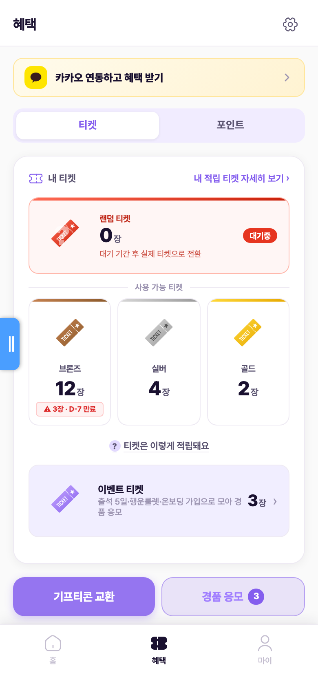
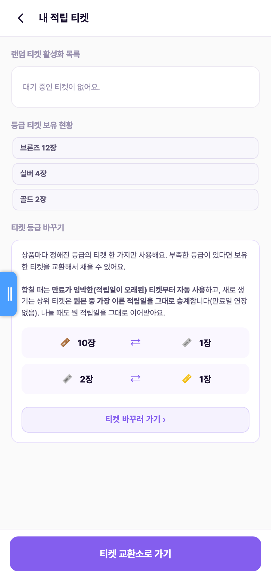
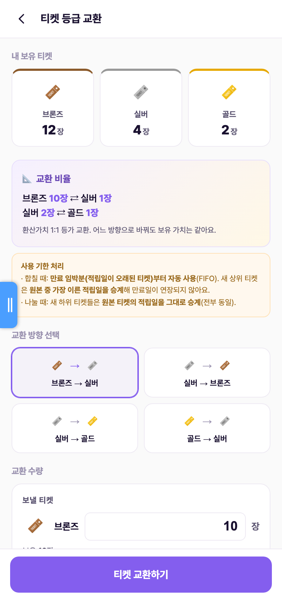
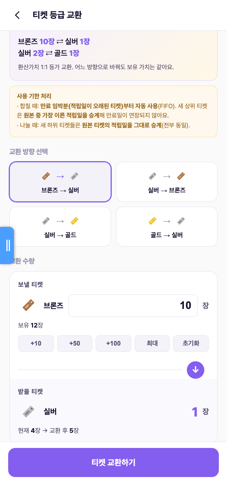
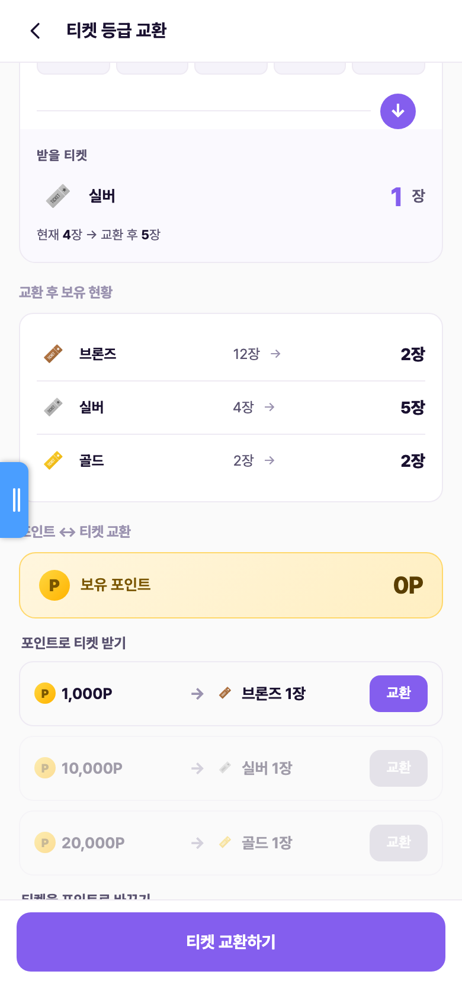
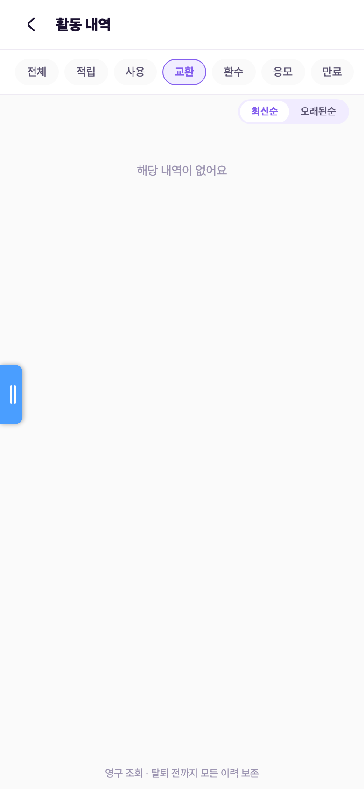
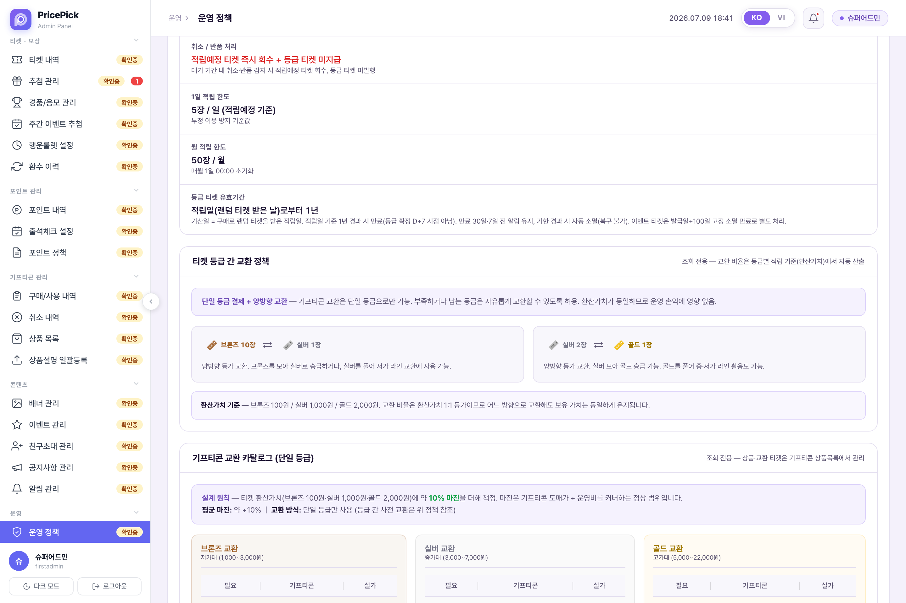
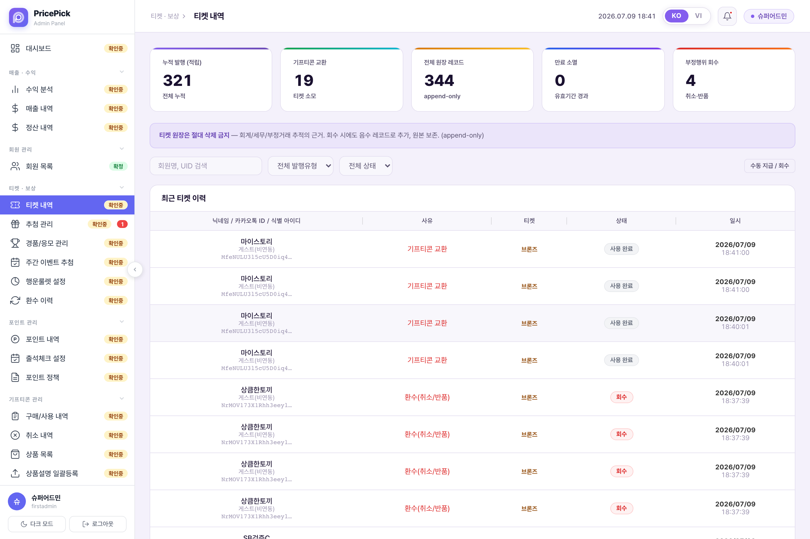
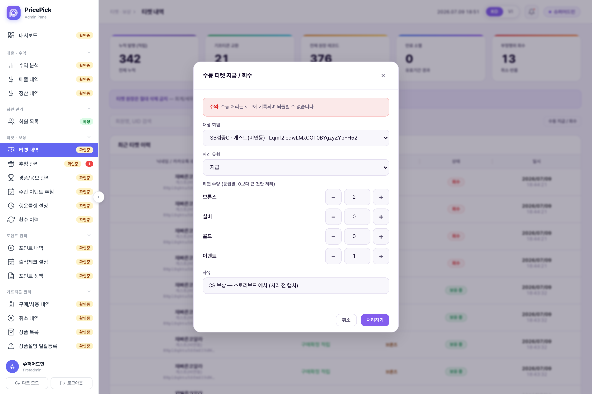

혜택 탭 진입부터 등급 교환·기록·CMS 정책 관리까지 — 실제 배포본 화면 캡처 기반
혜택 탭 상단 '내 티켓' 카드에 등급별 보유 수량(브론즈/실버/골드)이 표시된다. '내 적립 티켓 자세히 보기 ›'를 누르면 적립 티켓 상세로 이동한다.

'내 적립 티켓' 화면은 랜덤 티켓 활성화 목록과 등급 티켓 보유 현황을 보여주고, 하단 '티켓 등급 바꾸기' 섹션에서 교환 규칙(단일 등급 사용, 만료 임박분부터 자동 사용, 적립일 승계)과 비율을 안내한 뒤 '티켓 바꾸러 가기 ›'로 교환 화면에 진입시킨다.

교환 화면 상단에 등급별 보유 현황, 교환 비율(브론즈 10장 ⇄ 실버 1장 / 실버 2장 ⇄ 골드 1장), 사용 기한 처리 규칙(FIFO 자동 사용 · 적립일 승계 · 만료일 연장 없음)이 표시되고, 교환 방향을 버튼으로 선택한다.

보낼 티켓 수량을 직접 입력하거나 퀵버튼(+10/+50/+100/최대/초기화)으로 조정하면, 받을 티켓 수와 '교환 후 보유 현황'(등급별 before → after)이 화면에서 미리 확인된다. 보유 초과 입력 시 '보유 부족' 경고를 띄우는 구조.


정책·데이터 구조 기준으로 교환 실행 시 일어나야 하는 처리는 다음과 같다. ① 보낼 등급의 활성 티켓을 만료 임박분(적립일 오래된 것)부터 FIFO로 used 처리, ② 받을 등급 티켓을 신규 생성하되 원본 중 가장 이른 적립일을 승계(만료일 연장 없음 — 등급 티켓 만료는 적립일+1년), ③ 티켓 원장(ticket_transactions)에 교환 기록 추가, ④ 활동내역에 '등급 전환'으로 노출, ⑤ 완료 후 취소 불가. 활동내역에는 '교환' 필터가 이미 준비돼 있어(아래 캡처) 실행이 구현되면 여기에 기록이 쌓인다.

등급 교환 전용 CMS 관리 화면은 없다(별도 운영 개입이 없는 자동 등가 전환이기 때문). CMS에서는 ① '운영 정책' 페이지의 '티켓 등급 간 교환 정책' 패널에서 비율·환산가치(브론즈 100원/실버 1,000원/골드 2,000원) 기준을 조회하고, ② '티켓 내역'(append-only 원장)에서 회원별 티켓 발행·사용·회수 기록을 확인하며, ③ 오류·CS 보정이 필요하면 '수동 지급 / 회수' 모달로 등급별 수량을 직접 지급·회수한다(사유 필수, 로그 기록, 되돌리기 불가). 교환 실행이 구현되면 이 원장에 교환 기록이 쌓이는 구조다.



| 항목 | 확정 정책 |
|---|---|
| 교환 비율 | 브론즈 10장 → 실버 1장 · 실버 2장 → 골드 1장 (환산가치 1:1 등가 전환. 브론즈 100원/실버 1,000원/골드 2,000원) |
| 교환 방향 | SoT 확정 — 상향만 허용, 하향 불가. 배포 화면 4버튼·CMS 패널의 "양방향" 서술은 오표기로, SoT 기준 정정 대상(실행 로직 미구현이라 화면 수정은 구현 시 함께 처리) |
| 취소 | 교환 완료 후 취소 불가 |
| 사용 티켓 선택 | 만료 임박분(적립일이 오래된 티켓)부터 FIFO 자동 사용 — 유저가 개별 티켓을 고르지 않음 |
| 만료일 처리 | 새로 생기는 상위 티켓은 원본 중 가장 이른 적립일을 승계, 만료일 연장 없음 (등급 티켓 만료 = 적립일 + 1년, D-30/D-7 알림) |
| 사용 가능 조건 | 티켓·포인트 사용(교환 포함)은 카카오 연동 후에만 가능 — 게스트(미연동)는 적립만 누적 |
| 대상 티켓 | 등급 티켓(브론즈/실버/골드)만. 이벤트 티켓은 경품 응모 전용이라 등급 교환·기프티콘 교환에 쓸 수 없음 |
| 포인트 ↔ 티켓 교환 | SoT 확정 — 존치. 10P = 1원 기준 브론즈 1,000P · 실버 10,000P · 골드 20,000P, 쌍방 교환(포인트→티켓, 티켓→포인트 모두 가능). 등급 교환과 동일 화면에서 병행 제공 |